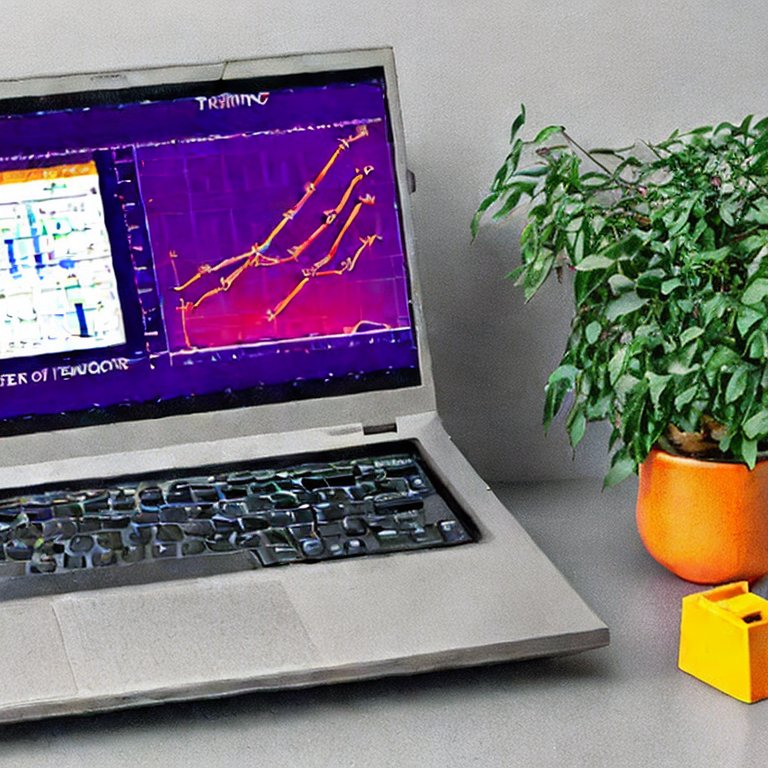
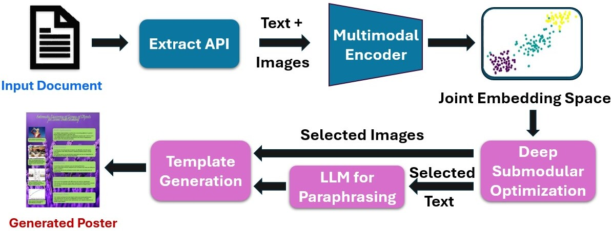
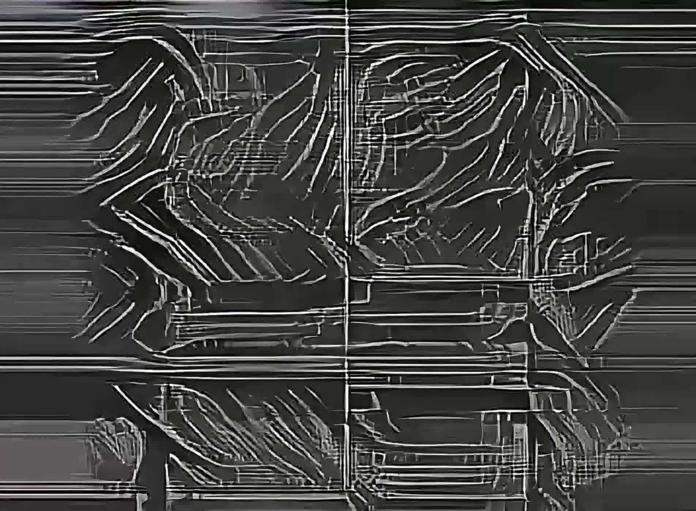
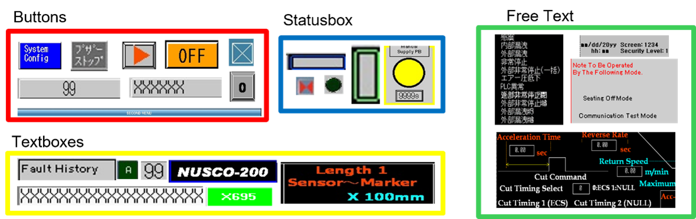
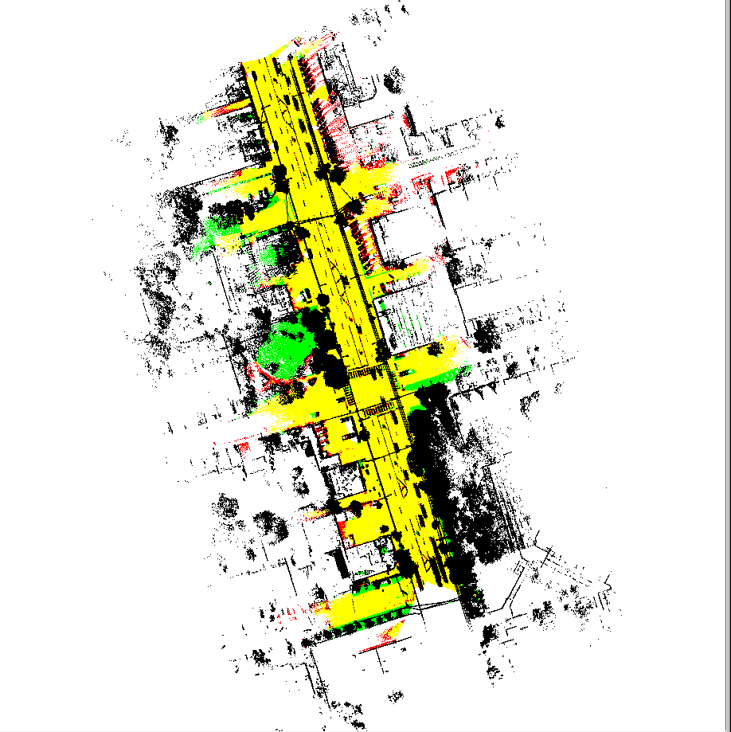
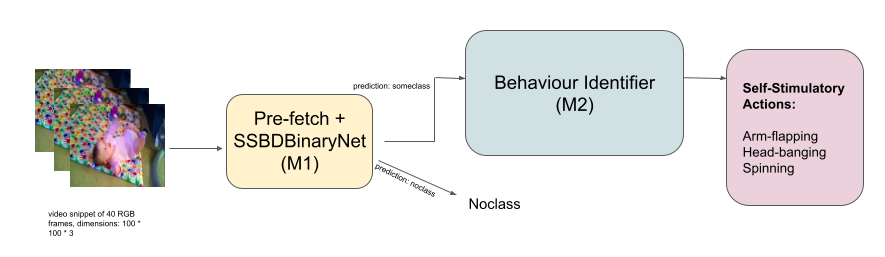
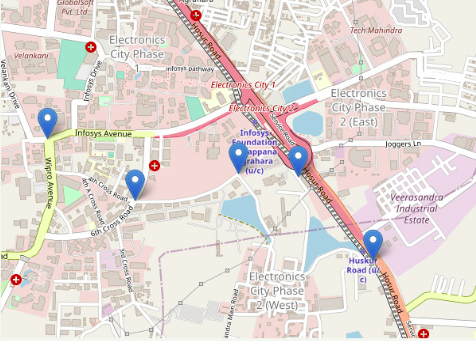

Presently, I work on integrating Computer Vision models into new energy offerings as a Senior Data Scientist at the Schneider Electric AI Hub and have a Master's degree in Computer Science from IIIT Bangalore. Previously, I was a summer intern at Adobe Research, working on poster generation from long multimodal documents.
My research interests are in the fields of Multimodal Learning, Adversarial Robustness, Interpretability, Computational Creativity, and Sustainability. Computer Vision models can be game-changers in various disciplines like Health, the Creative industry, and Autonomous driving, and I wish to contribute towards exploring these models' innate capabilities and robustness towards real-world deployment conditions. Outside of work, I love participating in Hackathons, and playing tennis and table tennis.
I am interested in collaborating on new projects and challenges. Please feel free to contact me on Twitter, Linkedin or via email. Else, if you're in Bangalore, I'm always in for a meeting over Filter Coffee and Masala dosa 😊

Image generated using Stable Diffusion.
Here are the research projects I worked on.
As always, thanks to all collaborators for the great learnings and fun times!

A poster from a long input document can be considered as a one-page easy-to-read multimodal (text and images) summary presented on a nice template with good design elements. Automatic transformation of a long document into a poster is a very less studied but challenging task. It involves content summarization of the input document followed by template generation and harmonization. In this work, we propose a novel deep submodular function which can be trained on ground truth summaries to extract multimodal content from the document and explicitly ensures good coverage, diversity and alignment of text and images. Then, we use an LLM based paraphraser and propose to generate a template with various design aspects conditioned on the input content. We show the merits of our approach through extensive automated and human evaluations.
Authors: Vijay Jaisankar; Sambaran Bandopadhyay; Kalp Vyas; Varre Chaitanya; Shwetha Somasundaram

We explore the applicability of spectrograms in Deep learning applications and in guiding creative decisions. To this end, we propose Spectrogrand, a novel spectrogram-driven end-to-end Generative AI pipeline creating interesting audiovisuals from text prompts and incorporating lightweight computational creativity metrics. This process involves selecting a music piece to underpin the audiovisual, generating an album cover image for the music, and performing neural style transfer on spectrogram chunks to generate the frames for the audiovisual. To democratise the benefits of this pipeline, we open-source the tool, computational creativity metrics, and associated data.
Authors: Vijay Jaisankar; Dinesh Babu Jayagopi

Recognising objects within graphical user interface (GUI) images presents unexpected challenges, particularly in cases of diverse objects and limited labelled data. In this paper, we enumerate the unique characteristics of GUI images from human-machine interface (HMI) screens and investigate several techniques for detecting appropriate objects present in them. We propose SAMatch, a novel training-free matching-based approach utilising a frozen foundation model, SAM for region proposal and a CNN-based model for deep template MATCHing. Through experimental evaluation, this paper compares approaches toward efficient processing of HMI screens using Computer Vision.
Authors: Kiruthika Kannan; Vijay Jaisankar; Akhil Pillai; Rakesh Tripathi

Annotation is a crucial component of point cloud analysis. However, due to the sheer number of points in large-scale static point clouds, it is an expensive and time-consuming process. We address this issue using a novel lightweight approach to reduce the overall annotation time for unlabelled static point clouds in the binary road segmentation task. By leveraging models trained on other point clouds in the same distribution, and radius sampling, our approach determines a small fraction of points for annotation. It automatically labels the remaining points using nearest-neighbor aggregation. We implement this approach in an open-sourced end-to-end system for mobile laser scanning (MLS) or mobile LiDAR point clouds, SuP-SLiP, i.e., Subsampled Processing of Large-scale Static LIDAR Point Clouds. We validate the robustness of this method through the bit-flipping adversarial attack and account for varying budgets by providing a feature that suggests a custom number of points to annotate for a given point cloud.
Authors: Vijay Jaisankar; Jaya Sreevalsan Nair

Conventionally, evaluation for the diagnosis of Autism spectrum disorder is done by a trained specialist through questionnaire-based formal assessments and by observation of behavioral cues under various settings to capture the early warning signs of autism. These evaluation techniques are highly subjective and their accuracy relies on the experience of the specialist. In this regard, machine learning-based methods for automated capturing of early signs of autism from the recorded videos of the children is a promising alternative. In this paper, the authors propose a novel pipelined deep learning architecture to detect certain self-stimulatory behaviors that help in the diagnosis of autism spectrum disorder (ASD). The authors also supplement their tool with an augmented version of the Self Stimulatory Behavior Dataset (SSBD) and also propose a new label in SSBD Action detection: no-class. The deep learning model with the new dataset is made freely available for easy adoption to the researchers and developers community. An overall accuracy of around 81% was achieved from the proposed pipeline model that is targeted for real-time and hands-free automated diagnosis. All of the source code, data, licenses of use, and other relevant material is made freely available.
Authors: Vaibhavi Lokegaonkar; Vijay Jaisankar; Pon Deepika; Madhav Rao; T K Srikanth; Sarbani Mallick; Manjit Sodhi

With the increasing number of vehicles, traffic levels are also increasing all over the world giving rise to many new and unique traffic scenarios. With the advancement and digitization of hardware useful for real-world traffic management, simulations and data-driven techniques are useful to decisions involving deducing installation locations where these sensors will be most useful and beneficial. In our presentation, we demonstrate and present the results of simulation of three such generalisable scenarios described as follows: i) Deadlock detection scenario demonstrates in real time which junctions are in a deadlock state i.e. vehicles in all directions at the intersection are queued up. ii) Emission detection scenario presents a graphical visualization of the level of emissions of different kinds of pollutants at all the junctions in the network. iii) Placement of speed detectors scenario can be used to identify precise locations in the network which are most prone to speed limit violations. The simulations can be used to make real-time decisions in any real-world road network, to recommend precise locations in the road-network to setup hardware devices like sensors and detectors, and as an underlying layer which can be used to evaluate interventions on the network.
Authors: Siva Jagadesh M; Vignesh Bondugula; Vijay Jaisankar; Jayati Deshmukh; Srinath Srinivasa